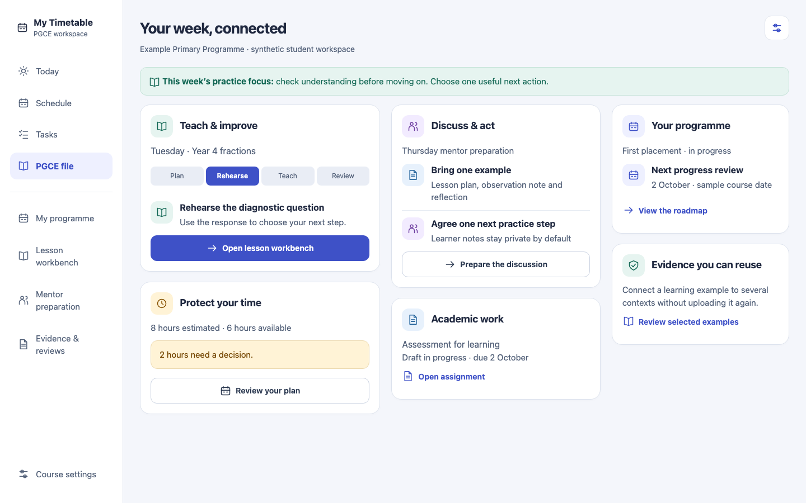
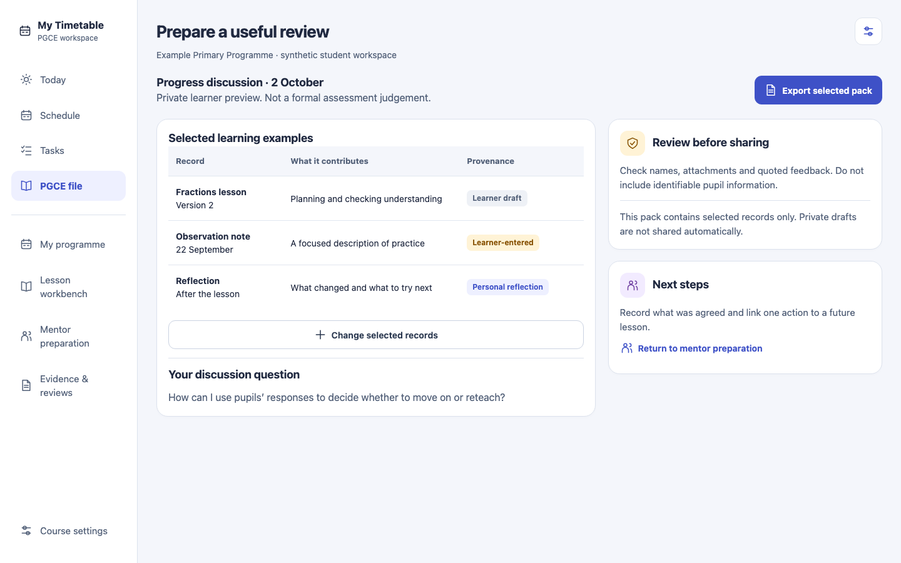
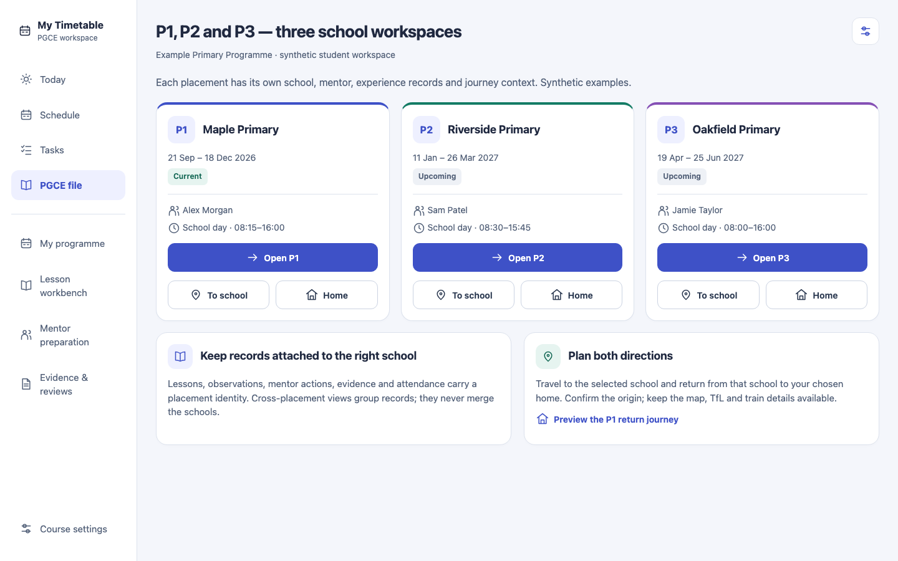

PGCE student journey — proposed screensPRODUCT AUDIT · PROPOSED FEATURES · SYNTHETIC DATA
Support the student, throughout the PGCE.
A connected programme, lesson, coaching, assignment and review workspace. These screens illustrate proposed behaviour; they are not implemented features or official provider assessments.
Your week, connected · desktop
Proposed desktop screen · example content · Open linked prototype

Prepare a useful review · desktop
Proposed desktop screen · example content · Open linked prototype

P1, P2 and P3 — three school workspaces · desktop
Proposed desktop screen · example content · Open linked prototype
